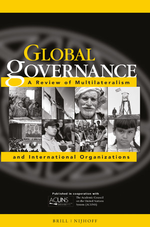
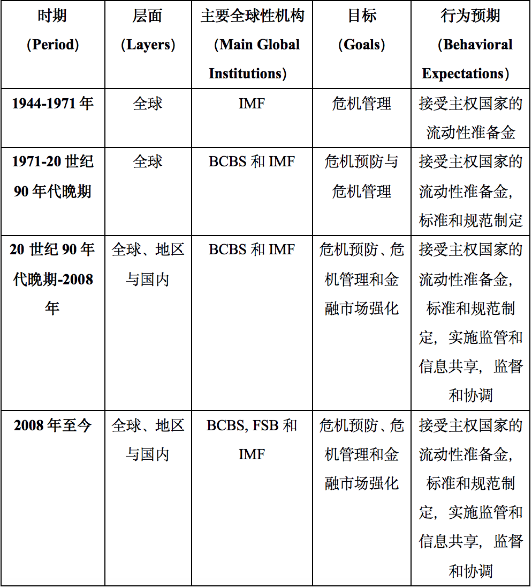
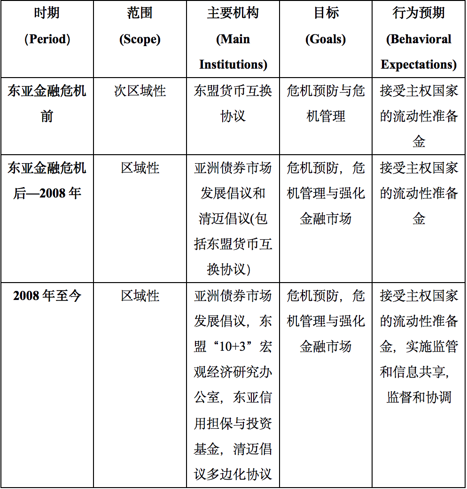

收录于合集

作品简介
【作者】 Ramon Pacheco Pardo, 伦敦国王学院国际关系专业副教授；Pradumna B. Rana, 南洋理工大学拉惹勒南国际研究学院（S. Rajaratnam School of International Studies, RSIS）客座副教授，曾在亚洲开发银行工作25年。
【编译】 刘瑛琛（吉林大学行政学院）
【校对】 王馨翊
【审核】 李源
【排版】 苏语涵
【美编 】聂涵琳
【来源】 Pardo, R., & Rana, P. B. (2015). Complementarity Between Regional and Global Financial Governance Institutions: The Case of ASEAN+3 and the Global Financial Safety Net, Global Governance: A Review of Multilateralism and International Organizations, 21 (3), 413-433. doi: https://doi.org/10.1163/19426720-02103005
期刊简介

《全球治理：多边主义与国际组织评论》 （Global Governance: A Review of Multilateralism and International Organizations） 是一本学术季刊，它展示了前沿学者和实践者对国际合作和多边主义进程的关注，并对当今时代最紧迫的跨国挑战如和平与安全、发展、人权、环境和健康等进行了富有挑战性的探索。根据Journal Citation Reports显示，该杂志2018年的影响因子为1.414。
区域性与全球性金融治理机构间的互补性：以东盟“10+3”与全球金融安全网为例
Complementarity Between Regional and Global Financial Governance Institutions: The Case of ASEAN+3 and the Global Financial Safety Net
内容提要
30年来金融危机的频繁爆发最终导致了全球金融危机，而这推动了全球金融治理的多层次发展。本文通过对全球金融安全网（GFSN）与东盟“10+3”金融安全网进行案例分析，探讨了全球与地区两个层面的金融安全网的关系。作者还使用国际机制理论（regime theory），考察了这两个网络的特征、主要机构、目标和行为预期的演变过程。本文认为，东盟“10+3”这一主要在1997年东亚金融危机后发展起来的区域性金融安全网，补充而非破坏了全球金融安全网。两者间相似的特征、目标和行为预期是这种互补性的基础。
文章导读
01
国际机制理论
在国际机制(international regime）这一概念的众多定义中，最常被使用的是斯蒂芬·克拉斯纳（Stephen D. Krasner）所提出的，即“国际机制”是“特定国际关系领域中汇聚着行为者预期的一组明确或隐含的原则（principles）、规范(norms)、规则(rules)和决策程序(decision- making procedures)”。 在作者看来，这一定义与罗伯特·基欧汉（Robert O. Keohane）和约瑟夫·奈（Joseph S. Nye）所提出的定义以及奥兰·杨（Oran R. Young）所提出的定义相似。
以上学者所提出的定义指出了国际机制的三个特征。首先，机制是围绕特定问题或者领域被创造出来的。其次，任一机制都有其目标。第三，机制创造了行为预期，这样，机制的参与者能够预测其他成员的行为。
为什么机制会被创造出来？ 通过借鉴功能主义路径，基欧汉提出，当某一机制预期的积极影响超过没有该机制的收益时，这一机制就会被创造出来。如果以下三个条件得到满足，国家就会相信这一机制是有用的。这三个条件分别为：法律责任，即以互惠的方式组织关系；重新安排交易成本，这使违反机制的成本高于服从机制；以及通过提供有效信息最终降低不确定性。
正如罗伯特·阿克塞尔罗德（Robert Axelord）解释的那样，几个行为者间稳定的互惠关系足够开启一项合作，接下来合作可以扩展到其他问题领域并纳入更多行为者。相似地，国际机制也可以通过少数几个国家寻求法律责任、交易成本的重新安排与可靠信息的提供而被建立起来。如果这些条件能够实现，机制就会持续下去，并可能覆盖新的问题和纳入更多的国家。因此， 机制并非是静态的。至少在强度（strength）、组织形式（organizational form）、范围（scope）和分配模式（allocation mode）四个方面，机制随着时间发展而演变。 强度指服从机制的程度；组织形式指机制制度化或非制度化的设计与运作形式；范围暗指机制所包含问题的范围；分配模式则指分配资源的不同社会机制（mechanisms）。国际机制的变化可以因为不同的原因。 根据国际机制的功能主义解释，当一个机制功能失调时，变化就可能发生，而且机制更倾向于改变而非消失。
国际机制的功能主义路径也面临着挑战，许多学者如苏珊·斯特兰奇（Susan Strange）等都对其提出了质疑。但作者认为，国际机制的功能主义路径仍然具有解释力，它足以解释某一机制的出现及演变过程。
02
全球金融安全网作为国际机制的演变过程
当代全球金融安全网机制具有多层次化、制度化与官僚化三个特点。 多层次化指其可以被划分为内在联系的全球性金融安全网、区域性金融安全网与国内金融安全网。制度化则指这一机制的发展与管理与许多制度的存在相关联，这些制度包括国际清算银行（下文简称为BIS）、巴塞尔银行监管委员会（下文简称为BCBS）、金融稳定理事会（FSB）等等。最后，全球金融安全网也是官僚化的，本文并不忽视在全球金融安全网中各国政治家讨价还价的过程的存在，但是关注的重点仍然是官僚化的全球金融安全网，因为来自各金融机构和各国政府的具有专业知识的官僚是这一机制设计、实施和监控背后的关键推动者。
那么，全球金融安全网是如何演变成当前这一形式的？原因又是什么？
本文作者将当代全球金融安全网的演变过程划分为四个时期。 作者认为，当代全球金融安全网始于1944年国际货币基金组织（下文简称为IMF）成立，第一个时期从1944年持续到1971年布雷顿森林体系解体。1971年布雷顿森林体系的解体以及其后世界范围内资本账户的逐步自由化导致了以相互依赖为主要特征的金融系统的发展，因此也产生了一个不同于此前的全球金融安全网。但到了20世纪90年代，金融危机开始广泛地影响东亚、拉美、俄罗斯和瑞典等国家和地区。不同发展阶段和地理位置的国家都经历了金融危机这一事实，加上对IMF在几场金融危机中所扮演的角色的争议，促使全球金融安全网这一机制发生了变化。2008年全球金融危机的爆发显示暴露了全球金融安全网的缺点，因此各公共和私人部门在已有目标和制度的基础上实施了新的进程，以创造一个更加健康的全球金融安全网机制。全球金融安全网机制的具体演变过程详见表1。
表1 全球金融安全网机制的演变过程

03
东盟“10+3”区域性金融安全网机制的演变
作者认为，东盟“10+3”区域性金融安全网的案例对于探究区域性与全球性金融安全网之间的关系十分有用。首先，以东盟“10+3”为中心的东亚区域性金融安全网是更大的制度性框架的一部分。这一更大的制度性框架中，全球层面、地区层面和国内层面彼此联系。东盟“10+3”区域性金融安全网机制并非出现在真空中，在此之前就存在着全球性金融治理机构与泛亚金融治理机构，同时东亚金融危机又促使这一地区的国家发展出国内金融安全网。其次，东盟“10+3”这一案例特别有趣。因为东盟“10+3”缺乏欧盟那种支持其金融治理的法律和政治框架，但在维护金融安全的层面上，东盟“10+3”又较欧盟更加团结。
作者将东盟“10+3”区域性金融安全网机制的演变过程划分为三个阶段，具体如表2所示。
表2 东盟“10+3”区域性金融安全网机制的演变过程
04
东盟“10+3”区域性金融安全网与全球金融安全网间的互补
表1和表2的对比显示，东盟“10+3”区域性金融安全网与全球金融安全网目标的演变是并行的，但东盟“10+3”金融安全网行为期望的范围较为狭窄。 比如，标准和规范制定并不在东盟“10+3”金融安全网的职能范围内，实施监管、监督和协调也只是在2008年金融危机后被纳入到东盟“10+3”金融安全网的职能中。 这些表明东盟“10+3”区域性金融安全网补充而非削弱了全球金融安全网。
但在过去的几年里，东亚国家采取了许多重要措施来强化这一区域性金融安全网。作者对此提出了疑问：这些措施是否足够使东盟“10+3”区域性金融安全网成为东亚国家下次面临流动性危机时在全球金融安全网以外的一个可行选择？作者认为，答案或许是不能，东盟“10+3”区域性金融安全网的存在是对全球金融安全网的补充。
首先，在东盟“10+3”区域性金融安全网与IMF之间存在着联系。为了解决道德风险问题和清迈倡议/清迈倡议多边化协议中独立监管能力不足的问题，清迈倡议/清迈倡议多边化协议要求，在提供超过特定比例的援助时，必须要有IMF所支持的项目存在。同时，地区内国家间不信任的存在，也使得这一地区难以发展一个真正独立的区域性金融安全网。更重要的是，如果这一地区爆发系统性金融危机，仅凭清迈倡议多边化协议的资金并不足够完成救助，尽管其资金规模有所增长。另一方面，IMF也未将东盟“10+3”区域性金融安全网视为竞争者，而是在能力建设和信息共享方面与其进行合作。
相似地，东盟“10+3”区域性金融安全网与BIS/BCBS之间也存在着联系。东南亚金融危机暴露了东亚国家银行治理与管制不充分的问题。这就需要对银行进行改革并承认发展本币债权市场的重要性，而这巩固了区域性金融安全网和BIS间的关系。在2008年金融危机后，更多东亚国家的中央银行加入了BIS和BCBS，这一事实进一步加强了区域性金融安全网与BIS/BCBS之间的关系。与IMF相似，BIS也未把东盟“10+3”作为竞争者对待。在制定巴塞尔协议Ⅲ时，BCBS与东亚国家进行了合作。
但另一方面，东盟“10+3”区域性金融安全网和FSB之间并不存在联系。然而，这是因为东亚地区缺少一个FSB式的论坛，而非两者之间存在矛盾。
05
结论
区域性金融安全网的增加并不意味着全球金融安全网的结束，正如本文所展示的，区域性金融安全网能够补充全球金融安全网。本文所探索的东盟“10+3”区域性金融安全网的案例，以及其他区域性金融安全网（如欧元区）的经验都证明了这一点。
就像哈格德（Stephan Haggard）和西蒙斯（Beth A. Simmons）所阐释的那样，机制在面临功能失衡时会进行演变。全球金融安全网机制的案例就说明了这一点。20世纪90年代以来，由于金融危机的频繁爆发，全球层面的金融安全机制的全球层面得到了地区层面和国家层面机制的补充，新的目标与行为预期也开始出现。全球金融安全网在适应新层面上也显示出其灵活性。这种演变和适应能力是区域性金融安全网和全球金融安全网两者互补的基础，也帮助全球金融安全网克服了其失衡。
同时，东盟“10+3”区域性金融安全网也以全球金融安全网为模型。区域性金融安全网所围绕创建的问题领域、其目标和行为预期都没有明显区别于全球金融安全网。另外，区域性金融安全网和全球金融安全网都具有多层次性、制度性和官僚性的特点。
最后，作者也承认，他们的研究并非是毫无缺陷的。最明显的，作者没有探究其他区域性金融安全网机制及其与全球金融安全网的关系，也没有深入分析多层次全球金融治理机制下国内金融安全网机制的作用。
译者评述
本文作者选择用国际机制理论（regime theory）探究区域性金融安全网与全球金融安全网之间的关系，因此我们难以回避理解与翻译国际机制（international regime）这一概念的问题。
首先，作者在文章中直接采用了克拉斯纳（Stephen D. Krasner）对国际机制概念的定义，即将“国际机制”定义为“特定国际关系领域中汇聚着行为者预期的一组明确或隐含的原则（principles）、规范(norms)、规则(rules)和决策程序(decision- making procedures)”。克拉斯纳的定义尽管影响广泛，但我们不得不承认，这一定义相对抽象且偏观念性，即国际机制的四个组成部分难以区分，而且在克拉斯纳的定义中国际机制是不应包括组织实体的。但本文作者既没有给出对国际机制四个组成部分的详细定义，同时在使用这一概念时不自觉地将相关的国际组织（international organization）包括了进来。可以说，本文对概念的定义是不够清晰的，这也在一定程度上影响了本文的价值。
其次，对于“international regime”这一概念，国内学界常翻译为“国际机制”，本文也借鉴了这一翻译[1]。但实际上，对这一概念的翻译，学界尚存有争论。比如有学者认为，这一概念译为“体制”最为合适。因为体制更多指一种没有严格法律界定、相对松散的和非根本性的组织和管理结构，可以被理解为一系列相关的条条框框（原则、规范、规则和程序）[2]。因此，为了更好地理解与讨论“international regime”这一概念，我们有必要对这一概念的翻译进行更多交流。
除却对国际机制这一概念的翻译与理解问题，本文还有许多值得探讨的地方。本文主要探讨了区域性金融安全网与全球金融安全网的关系问题，作者选择东盟“10+3”区域性金融安全网作为案例，将其演变过程与全球金融安全网的演变过程进行比较。作者认为，这两者的演变过程一致，且东盟“10+3”区域性金融安全网的特点、所围绕创建的问题领域、目标和行为预期等都与全球金融安全网相似，而且两者所包括的主要机构间也建立了联系，因此得出东盟“10+3”区域性金融安全网补充而非破坏了全球金融安全网的结论。但一方面，正如作者自己所指出的，本文没有讨论其他区域性金融安全网与全球金融安全网之间的关系。所以我们不妨认为，本文结论的解释力相对有限。另一方面，东盟“10+3”区域性金融安全网如何更好地补充全球金融安全网，比如区域内金融治理机构如何与IMF互动，这一问题值得更多的关注。
参考文献
[1]例如罗伯特·基欧汉著，苏长和等译：《霸权之后：世界政治经济中的合作与纷争》，上海：上海人民出版社2012年版；王杰主编：《国际机制论》，北京：新华出版社2002年版。
[2]任东来：《对国际体制和国际制度的理解和翻译》，载《国际问题研究》，2000 年第 6 期，第51 页。
文章观点不代表本平台观点，本平台评译分享的文章均出于专业学习之用, 不以任何盈利为目的，内容主要呈现对原文的介绍，原文内容请通过各高校购买的数据库自行下载
添加 “国小政”微信
获取最新资讯


国政学人
支持学术公益与知识传播
微信扫一扫赞赏作者 __赞赏
已喜欢，对作者说句悄悄话
取消 __
发送给作者
发送
最多40字，当前共字
上一页 1/3 下一页
长按二维码向我转账
支持学术公益与知识传播
受苹果公司新规定影响，微信 iOS 版的赞赏功能被关闭，可通过二维码转账支持公众号。